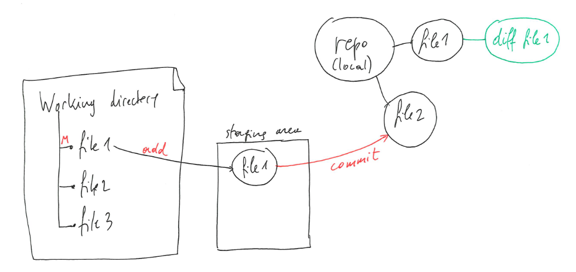

Chapter 11 Annex: Collaborating with Git and GitHub
This chapter is based/adapted on content from Happy Git and GitHub for the useR and Version Control with Git.
11.1 Motivation
In the past, students have reported the difficulty of collaborative work on R code and Rmd files. Each student work with RStudio on their local computer, and share the code, report and data files on shared drive and/or send updates by email. Such a situation may lead to a well known situation, nicely caught by the ‘notFinal.doc’ PhD Comic:
Figure 11.1: The ‘notFinal.doc’ PhD Comic, describing the very real struggle with trying to handle version with file names.
, describing the very real struggle with trying to handle version with file names.](figs/phd101212s.png)
The goal of this chapter is to introduce students to ‘version control’, used by data scientists, bioinformaticians and programmers around to world to keep track of changes in code, Rmd reports, or any other files, and efficiently collaborate among large and small teams.
Although there exist many other version control software, we will focus on Git and GitHub, and these two are widely used.
11.2 Automated version control
Version control records each change (addition, deletion or modification) that is made to a document, thus allowing to rewind back to any version of the document since its creation. These recorded changes can originate from different users that have made independent changes to the same document.
If two users modify the same part of the document at the same time on their respective computers, a conflict will occur, that can’t be automatically merged by the software (that can’t decide whose changes should be kept and whose should be discarded), and would thus have to be resolved by hand. In all other cases, changes are recorded and managed automatically by the version control software.
In addition to the actual changes to the file(s), the version control software also records metadata about the changes, such as who did the changes and when they were done.
Track changes
Editors such as Microsoft Word, Google docs or LibreOffice allow to record track changes, version history, or recording and displaying changes respectively. These allow users to highlight suggested changes in a document that the main author/reviewer then accepts or rejects. These are not the same as automatic version control:
- Track changes can’t be done in parallel on the same document, unless a user is connected to an on-line version of the editor (such as Google docs or Microsoft Office 365).
- Once a track change is accepted or rejected, it isn’t possible to return to previous version. Google and Microsoft OneDrive documents do allow this.
- Track changes are only applicable to their respective formats, and not to code files, Rmd documents, or other text-based files.
- Track changes work on a single file, while version control records changes in all files of a project.
- When editing code, it is essential to keep a valid source code file and functioning versions of the code, which in turn isn’t possible with track changes.
Version control is like an unlimited undo feature that works on many files at a time, and allows to rewind back to any version of a data analysis or software project. In addition, version control is designed for several people to work in parallel on the same set of files.
11.3 Introduction to Git and GitHub
Git is the automated version control software that we will be using. GitHub is a web interface to Git that allows to share a version control project over the interned, facilitates some operations to work collaboratively on-line and enables discussions (i.e. issues). Let’s start by explaining some fundamental Git concepts.
Git
In Git, the directory that contains all the files that need to be tracked/version controlled is called a repository (often shortened to repo). This would be equivalent to a RStudio project that one sets up before starting a new analysis. And as a matter of fact, later, we will use Git to version control an RStudio project.
When starting a new project that needs to be version controlled, the (typically) local directory needs to be initiated to use Git. Then individual files in that working directory can be added to the Git repository, so that Git knows that these will need to be version controlled. Files that are in the working directory, but haven’t been added to the Git repository will not be tracked. Once added, files aren’t yet under version control, they a prepared (or staged) to be committed. It’s only upon committing that changes get versioned (recorded).
Figure 11.2: Version control with Git: creating a new repository.
Similarly, when a file that is under version control is modified, Git recognises that the file has been modified, but doesn’t record anything yet. That modified version of the file also needs to be added. Once added, modified files are staged to be committed.
The collection of one or multiple files (whether new or modified) that are staged (or in the staging area) are called the changeset. All these files can now be effectively committed, i.e. that all the changes, who made them, and when they were added, are recorded and added to the version control.
Note that Git does not record the complete file at each modification, but only the differences between each file. Knowing the difference between the current and previous states of a file is enough to reconstruct the previous version(s).
Figure 11.3: Version control with Git: modifying files.
The same process applies for file deletion: delete a file, add it to the staging are (these can be done in one step), and commit the changes.
► Question
Can you figure out why it is important to stage multiple files and commit all together, as opposed to committing multiple single files one by one?
Hint: Imagine that you are working on a project containing one Rmd
report and two R code files, that the report needs to source (see
?source if you don’t know what sourcing is) to be able to compile,
and consider that two code changes need to be done, one in each R code
file.
GitHub
What we have seen so far all happens on a local computer. But to be able to work as a team, the Git repository needs to be accessible to others, and GitHub allows this.
The repository that we created above is a local repository, as it lives on a user’s local computer. Repositories can also live elsewhere, on another user’s computer, or a server; such a repositories are called a remote repositories.
Let’s now start from an existing repository on GitHub. Creating a local copy of that repository and its content is done by an operation called cloning. Different users can of course clone the same remote. At the time of cloning, the content of the local and remote repositories are identical.
The creation, modification and deletion of files is as described above: the user interacts with the files in their working directory and commits the changeset to their local repository. The changeset can be synchronised with the remote repository by pushing the local changes. Another user, who has previously cloned the remote repository can pull these latest changes to their local repository.
Figure 11.4: Version control with GitHub.
The synchronisation of local and remote changes while pulling and pushing are handled automatically by Git, except in case of conflict. A conflict happens when two users change the same part of a file:
- Alice and Bastien pull the latest changes and modify the empty
file1by adding their name at the beginning of the file. Alice’s file looks like this in her local repository:
AliceAnd Bastien files looks like this in his local repository:
Bastien- Alice commits locally and pushes to the remote repository.
file1in the remote and in Alice’s local repository are now identical, and Git recorded that the change was adding a new line containingAlice. - Bastien now also tries to push but gets an error because he pushes a file that contains a different first line that would override Alice’s commit. His update are rejected because the remote contains work that he does not have locally. If he wants to integrate the remote changes, he first needs to pull these changes, resolve the conflicting modifications:
Alice and Bastienand then push again.
- Alice can not pull to retrieve Bastien’s changes from the remote.
11.4 Getting started
► Question
Create an account on GitHub. Choose your user name wisely as you might want to reuse it later and will have to share it.
Create your own repository and open an issue on it.
► Question
You have now been added to the WSBIM2122-GitHub-training repository.
Reply to the first issue to verify that you’re able to access the repository.
Create a new issue where you make a link to a file or a specific line of a file and assign it to yourself.
Close that issue to mark it as done.
11.5 Git and RStudio
The original interface to Git was using the command line (see below). It is also possible to use Git through the RStudio interface to manage everything that is on a repository. This is useful if you’re working mainly with R and want to use Git version control but also if you want to do collaborative work. The RStudio interface then allows a click-button way of using git that can be easier than the traditional command line.
This section of the course is based on the Happy Git and GitHub for the useR tutorial by Jennifer Bryan.
11.5.1 Install Git
Git needs to be install first on your computer for RStudio to use it. Installation is different depending on the operating system of your computer.
Windows users
The easiest way is to install Git for Windows, also called “Git bash”. This allows to get Git but also a Bash shell that is useful to venture outside of R/RStudio.
When installing Git for Windows, use the conventional location as it is going to help other programs to find Git. RStudio prefers for Git to be installed in “C:/Program Files”. Also, when asked about “Adjusting your PATH environment”, select “Git from the command line and also from 3rd-party software”. Otherwise, use the defaults parameters.
macOS users
On macOS, Git can be installed directly from the shell using this command :
git configThis will open an offer to install developer command line tools, accept the offer and click on “Install”.
This might have to be redone after upgrading macOS or the RStudio Git pane can disappear from a system where it was previously working.
GNU/Linux users
Use your distribution package manager. If you use Debian or Ubuntu,
the following command will install git:
sudo apt install git11.5.2 Connect RStudio to your GitHub repository
To connect RStudio to a GitHub repository, a personal access token (PAT) is needed. This will act as an identifier for a specific GitHub user, along with the authorization the user has. You can thus NOT use your GitHub password as a way to connect to your repository using RStudio.
A PAT can be created on GitHub, in Settings > Developer Settings > Personal access tokens > Tokens (classic) or directly here. Click on Generate token (classic) and configure you’re token. You can configure :
- A name, that generally describes what you’re using this PAT for.
- An expiration date, after that date the PAT won’t work anymore. GitHub security advises for 30 days but you can configure it to no expiration if you see fit. We advise to put the expiration date to at least the end of the semester, in case you want to use it for your projects.
- What this PAT allows to do, it is recommended to select repository, user, gist and workflow.
Once you’ve generated the token, it will appear. Be careful, it is the only time you’ll be able to see this PAT so it is advised to copy it somewhere to store it. Still keep in mind, this PAT is a password that allows you to modify your work so avoid putting it somewhere public.
Once a PAT has been created, you can clone any GitHub repository on your local computer using RStudio. The easiest way of working with GitHub and RStudio is to have a GitHub repository first. The only thing needed from GitHub is the cloning https address of your repository. To get it, go the repository page, click the big green button that says “<> Code” and copy the HTTPS URL address.
To clone your GitHub repository on your computer, open RStudio and create a new project. You’ll then be able to chose to create a Version Control project and choose Git. Then you just need to paste the HTTPS URL of your GitHub repository and it will be cloned as an R project.
The project will open and a new Git tab will appear in the “environment” pane of RStudio. This is where you’ll be able to manage all things Git related. A file appears there once it has been added or modified from the GitHub version. Once a file is modified, you can click on “Diff” to open a new window that will show you what has been changed in the selected file. You can then check the staged box, write a commit message and commit these changes. You then click push to send all that to GitHub. That’s when you’ll be asked to give your user name and PAT. RStudio locally tends to remember the PAT so you shouldn’t have to put it again.
Note : If RStudio doesn’t appear to find Git on your computer, go to Tools > Global Options > Git/SVN and make sure that the Git executable points to where your Git executable is located on your computer.
You might also have seen a .gitignore file. This is a text file
containing the names of the files that have to be ignored by git and
not pushed to GitHub. This should usually contain your .Rproj but also
all files bigger than 50 Mb as these cannot be pushed to GitHub.
RStudio also allows you to have a look at the commit history, if you want to see all the changes that have been done to the repository.
► Question
Connect the repository you created in the previous section using RStudio.
Create a Rmd file locally on RStudio then stage, commit and push it.
Modify that Rmd and knit it. When committing, have a look at how the modification are showed to you. Push it on GitHub and go see the compiled result online. Also have a look at the commit online.
Modify the README file on GitHub and pull it locally.
11.6 Git and command line
It is still interesting to know that, usually, all these things are done through the command line. Here is how to do it :
- Initialise a local repository
git init- Clone a remote repository
git clone url- Show the current status of your repository, indicating what files have been modified and haven’t been staged yet.
git status- Stage a file for commit.
git add file- Commit the staged changes with a comment.
git commit -m ‘comment’- Push to or pull from a remote repository.
git push
git pullNote: By installing git for windows, Windows users installed git bash, a terminal that can be used to use Git through the command line. You can use it in the terminal pane of RStudio as long as you’ve configured it correctly by selecting “Git Bash” in Tools > Global Options > Terminal > New terminals open with
11.7 Handling conflicts
► Question
This exercise will illustrate a merge conflict. To do so, work in pairs (called Alice and Bastien below).
Alice creates a GitHub repository and adds
file1to the repository, and adds Bastien as a collaborator with write access: Settings > Collaborators (in the left panel) > Add people > Search and add a GitHub user.Both Alice and Bastien clone to remote repository and add their names to
file1.Alice commits her local changes and pushes them to the GitHub repository.
Bastien commits his local changes and tries to push them to the GitHub repository.
Bastien pulls the latest version from GitHub, and manually fixes conflict in
file1by manually merging the conflicting lines and adding both names.Bastien commits his local changes and pushes to the remote repository.
Alice pulls the latest version.
Using Git and Github is mostly a quite sailing on a calm sea. The only little annoying hick-up are conflicts. It is best to avoid these by coordinate work by keep local and remote repositories in sync:
- The easiest way to avoid conflicts is to always be in sync with the remote repository. To do so, always pull the latest changes before starting to work on a project, and regularly push so that you co-workers can also stay in sync with your changes.
To further avoid conflicts, try to modularise your project by splitting the work into multiple independent files. For an Rmd project:
- the code for new sections could initially be written in separate code files so as to avoid breaking the compilation of the Rmd file when developing the new analysis;
- save intermediate data and results so that others can re-use them independently of the whole pipeline;
- given that Git compares documents line by line to assess if it can merge them automatically, use shorter lines (i.e. split your sentences and paragraphs over more lines) to reduce the risk of conflicts.
GitHub issues are a useful way to discuss any specific points and centralise coordination in a project.
It is possible to cancel commit if you forgot to pull before working with the following command:
git reset --soft HEAD~1This is only feasible on the command line.
11.8 Other Git/GitHub features of interest
Pull requests
There’s one last operation that GitHub facilitates, which is the pull request. The use cases that we have seen above assume that all users are part of the project and can thus directly write/push to the remote repository.
- It is possible for other GitHub users to contribute to a project
without being a member by first forking a GitHub repository, which
will create a copy under their account. As an example, Alice could
fork
UCLouvain-CBIO/WSBIM2122-GitHub-trainingand createAlice/WSBIM2122-GitHub-training. GitHub remembers the forking operation and the relation between the two repositories. - Alice can now clone
Alice/WSBIM2122-GitHub-traininglocally, make any changes she sees fit, and push them back to her remoteAlice/WSBIM2122-GitHub-training. - She could now send a pull request to merge changes from
Alice/WSBIM2122-GitHub-trainingback intoUCLouvain-CBIO/WSBIM2122-GitHub-training. The pull request can be inspected and reviewed and merged by a member of theUCLouvain-CBIO/WSBIM2122-GitHub-training. - Pull requests (often shortened PR) are also useful when multiple members of the same repository want their contributions to be reviewed by other team members. Using PRs within a team is useful so as to keep everybody informed about the changes different members do.
Branches
It is also possible to create entire copies of a repository, and work independently on these different copies. These copies are called branches. Changes can be done on different branches, such as the default (main) branch below, and a work branch. Once the work in the work branch is completed, its changes can be merged back into the main branch.
Figure 11.5: Git branches.

At this point, if the same lines where modified in the main and work branches, conflicts would need to be addressed, as seen above.
11.9 Glossary and references
This glossary is based on the Carpentry’s Git novice lesson glossary.
changeset: a group of changes to one or more files that are or will be added to a single commit in a version control repository.
clone: a local copy of a remote repository. Both local and remote repositories know about each other and can thus be kept in sync. The action is called cloning.
conflict: a change made by one user of a version control system that is incompatible with changes made by other users. Helping users resolve conflicts is one of version control’s major tasks.
commit: to record the current state of a set of files (a changeset) in a version control repository. As a noun, the result of committing, i.e. a recorded changeset in a repository. If a commit contains changes to multiple files, all of the changes are recorded together.
pull: action of retrieving changes from a remote repository and merge them into a local repository.
push: action of adding changes from a local repository to a remote repository.
remote: a version control repository, typically located on another computer/sever, connected to another (local), in such way that both can be kept in sync exchanging commits.
repository: a storage area (typically a directory) where a version control system stores the full history of commits (changes) of a project and information about who changed what and when.
resolve: to eliminate the conflicts between two or more incompatible changes to a file or set of files being managed by a version control system.
version control: a tool for managing changes to a set of files. Each set of changes creates a new commit of the files; the version control system allows users to recover old commits reliably, and helps manage conflicting changes made by different users.
11.9.1 References
- Happy Git and GitHub for the useR, https://happygitwithr.com/
- Version Control with Git, https://swcarpentry.github.io/git-novice
Page built: 2024-11-01 using R version 4.4.1 (2024-06-14)